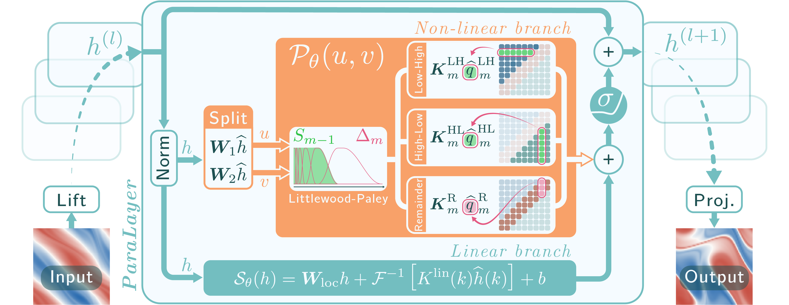
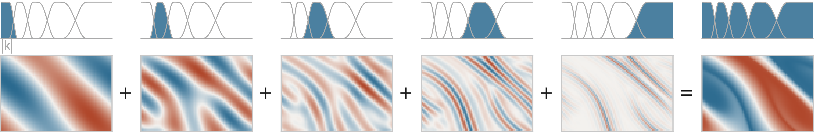
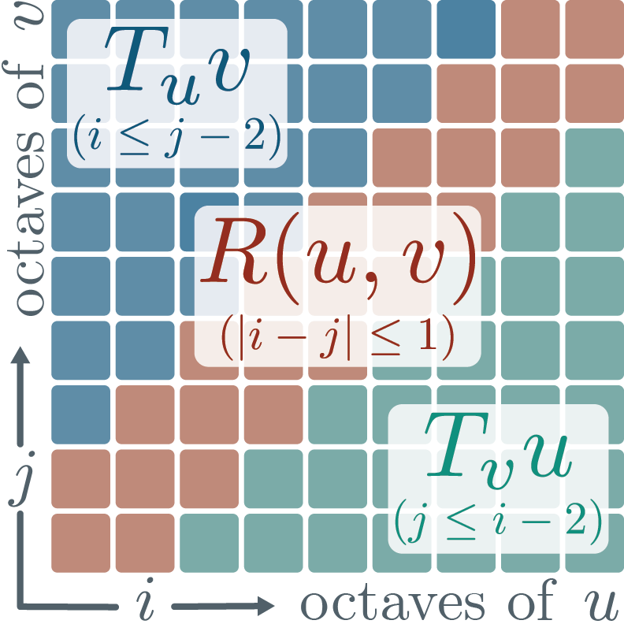
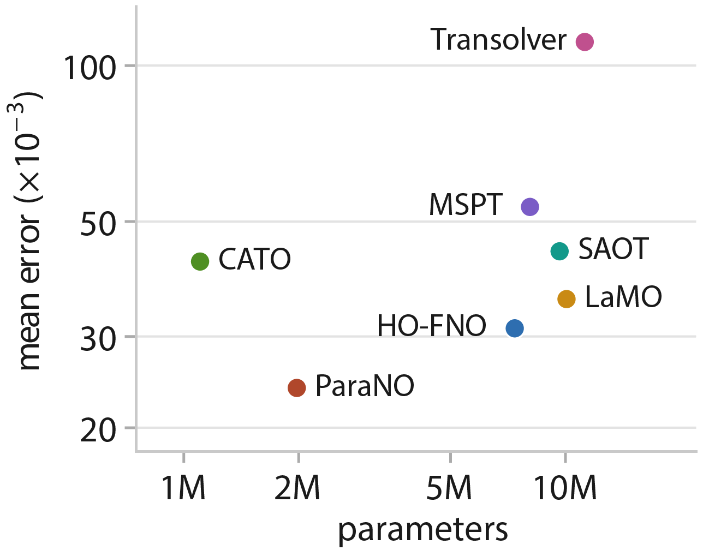
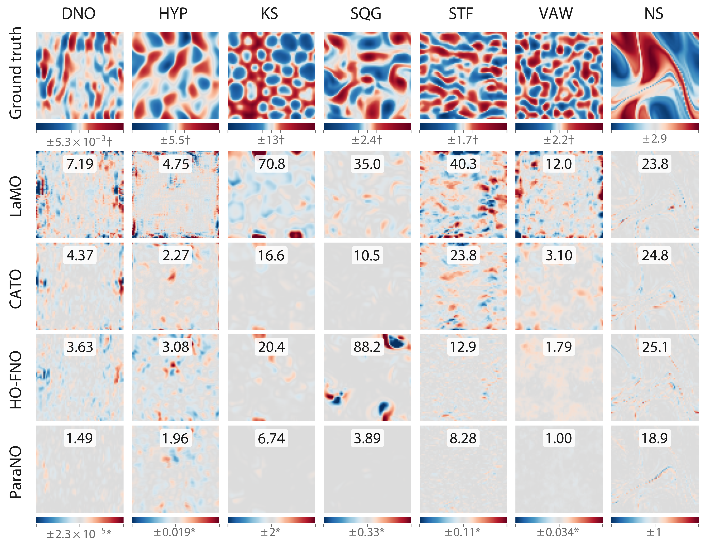

Neural Operators have emerged as powerful architectures for learning mappings between infinite-dimensional function spaces. While predominantly deployed as PDE surrogates, their broader promise in data-driven AI for Science requires models capable of rigorously resolving complex non-linear dynamics. To address this, we introduce ParaNO, a Fourier-based neural operator grounded in paradifferential calculus. Crucially, ParaNO leverages Bony's decomposition to efficiently learn the cross-scale frequency interactions caused by non-linearities. Alongside our method, we introduce The Non-Linear Six (The NL6), a curated benchmark designed to systematically isolate distinct classes of algebraic non-linearities without geometric confounding. ParaNO improves over SotA baselines by 23% on Navier-Stokes and reduces errors by factors of 1.6x to 4.6x on the NL6.
Paradifferential Neural Operators (ParaNO) are Fourier-based neural operators explicitly designed to handle non-linear PDEs through a theoretical grounding in Bony's paradifferential calculus. While standard Fourier Neural Operators (FNOs) treat Fourier modes independently in their spectral convolution layers, relying solely on pointwise activations for implicit frequency mixing, non-linear dynamics induce critical cross-frequency couplings, cascades, and resonant interactions across spatial scales.
ParaNO translates the principle of paradifferential calculus into deep learning by employing dyadic Littlewood–Paley decompositions to partition the frequency spectrum into exponentially scaled bands, isolating low–high and high–low frequency modulations from resonant mixing. By combining this scale-conditioned non-linear paradifferential branch with a dedicated linear spectral pathway, ParaNO explicitly mirrors the algebraic structure of non-linear PDEs.

The ParaNO architecture. In each ParaLayer, the latent state \(h^{(l)}\) is mapped to \(h^{(l+1)}\) by summing a residual skip connection with a linear branch \(S_\theta(h)\) and a non-linear paradifferential branch \(P_\theta(u, v)\). The normalised latent state is split into bilinear operands \(u, v\), decomposed across frequency octaves into Low–High, High–Low, and Remainder interactions, and modulated by learned factorised spectral kernels \(K_m\).
ParaNO employs smooth dyadic partitions of unity in frequency space to partition the input field \(u\) into scale-localised octaves \(\Delta_j u\), separating smooth macroscopic structures from fine oscillatory details:

Dyadic Littlewood–Paley decomposition of a 2D scalar field. Top: Partition of the frequency domain into dyadic bands. Bottom: The corresponding band-pass filtered components \(\Delta_j u\) isolating progressively finer spatial scales, which sum to reconstruct the original field (right): \(u = \sum_{j=0}^{J-1} \Delta_j u\).
Rather than treating frequency interactions as an unstructured dense sum, Bony's decomposition partitions non-linear interactions \(uv\) into three non-overlapping algebraic regimes:
\[ uv = \underbrace{T_u v}_{\text{low--high}} + \underbrace{T_v u}_{\text{high--low}} + \underbrace{R(u, v)}_{\text{resonant}} \]

Bony’s interacting octaves.
The paraproducts \(T_u v\) and \(T_v u\) capture asymmetric modulations where slowly-varying low frequencies act as modulating coefficients on fine, oscillatory scales. The remainder \(R(u, v)\) isolates resonant interactions between comparable frequencies.
Instantiating dense \(C \times C\) weight tensors across all discrete frequency coordinates and \(J\) dyadic bands would incur an intractable \(\mathcal{O}(J C^2 M_x M_y)\) parameter footprint.
To ensure parameter efficiency while maintaining high expressivity, ParaNO parametrises the discrete spectral kernels using a separable tensor factorisation:
\[ K_m^\alpha[k_x, k_y] = \sum_{r=1}^R X_m^\alpha[r, k_x] Y_m^\alpha[r, k_y] A[r] \]
A shared channel-mixing tensor \(A \in \mathbb{C}^{R \times C \times C}\) is shared across bands, while band-specific 1D frequency profiles \(X_m^\alpha, Y_m^\alpha\) learn distinct, scale-dependent pseudo-differential responses.
Existing PDE benchmarks (such as Geo-PDE, PDEBench, or The Well) often conflate geometry, multi-field boundary conditions, and spatial meshes, making it difficult to attribute performance gains directly to a model's handling of non-linearities.
We introduce The Non-Linear Six (The NL6): a curated benchmark of six non-linear PDE learning tasks simulated on periodic uniform grids, systematically isolating distinct mathematical classes of algebraic non-linearities:
| PDE Name | PDE Non-Linearity Type | Input Formulation | Target |
|---|---|---|---|
| Surface Quasi-Geostrophic (SQG) | Semi-linear (bilinear transport interaction) | Surface buoyancy \([\theta]^{10}\) | Next 10 frames |
| Kuramoto–Sivashinsky (KS) | Semi-linear (quadratic gradient \(\frac{1}{2}|\nabla u|^2\)) | State \([u]^{10}\) | Next 10 frames |
| Shear-Thinning Flow (STF) | Quasi-linear (non-polynomial fractional gradients, Carreau–Yasuda) | Velocity field \([u]^{10}\) | Next 10 frames |
| Viscoacoustic Waves (VAW) | Non-linear mapping (heterogeneous fractional Laplacians) | Pressure \([p, \partial_t p]^{10}\), medium \((c_0, \log Q)\) | Next 10 frames of \([p, \partial_t p]\) |
| Dirichlet–Neumann Operator (DNO) | Non-local boundary operator (water waves) | Surface state \([\eta, \psi]\) | Normal flux \(G(\eta)\psi - |D|\psi\) |
| Hyperelasticity (HYP) | Quasi-linear static operator (non-integer Ogden model) | Displacement field \(u\) | Divergence \(\mathrm{Div}\,P(F)\) |
ParaNO was evaluated against state-of-the-art neural operators across both Geo-PDE (Navier–Stokes, Darcy, Plasticity, Airfoil, Pipe) and the newly proposed NL6 benchmark. All models on NL6 are standardised to a 2M parameter budget.

\(\ell_2\) error against model size on Navier–Stokes. ParaNO achieves the lowest test error (23.87 \(\times 10^{-3}\)) with only 2.0M parameters.
Compared to concurrent and state-of-the-art models, including HO-FNO (7.4M params, error 31.11), LaMO (10.1M params, error 35.43), and Transolver (11.2M params, error 111.07), ParaNO delivers a 23% error reduction while operating with up to 5.6x fewer parameters.
| Model | Native Grids | Interpolated Geometries | |||
|---|---|---|---|---|---|
| Navier–Stokes | Darcy | Plasticity* | Airfoil | Pipe | |
| Transolver | 111.07 ± 32.16 | 5.44 ± 0.03 | 1.20 | 5.40 ± 0.46 | 4.71 ± 0.24 |
| LaMO | 35.43 ± 3.30 | 4.14 ± 0.19 | 0.70 | 4.58 ± 0.44 | 4.49 ± 0.33 |
| SAOT | 43.81 ± 0.80 | 5.00 ± 0.15 | 0.80 | 5.00 ± 0.17 | 6.29 ± 0.41 |
| MSPT | 53.36 ± 0.86 | 11.14 ± 0.46 | 1.00 | 6.59 ± 0.34 | 3.98 ± 0.32 |
| CATO | 41.86 ± 1.20 | 3.87 ± 0.05 | 0.50 | 4.16 ± 0.04 | 4.03 ± 0.14 |
| HO-FNO | 31.11 ± 0.08 | 5.72 ± 0.45 | 0.60 | 4.86 ± 0.06 | 5.55 ± 0.20 |
| ParaNO (Ours) | 23.87 ± 1.19 | 4.90 ± 0.14 | 0.39 ± 0.02 | 5.70 ± 0.19 | 5.45 ± 0.16 |
Mean and standard deviation \(\ell_2\) errors \((\times 10^{-3})\) over three seeds on Geo-PDE. All baselines retain their original codebase and configurations. * Plasticity reports published values for every baseline. ParaNO excels on Native Grids with no confounding geometric factors, improving upon HO-FNO by 23% on Navier–Stokes, and establishes a new state-of-the-art on Plasticity (0.39 vs 0.50).
| Model | DNO | HYP | KS | SQG | STF | VAW |
|---|---|---|---|---|---|---|
| LaMO | 7.95 ± 0.23 | 6.86 ± 0.31 | 57.99 ± 2.19 | 56.54 ± 3.41 | 38.62 ± 4.32 | 12.59 ± 0.86 |
| CATO | 4.95 ± 0.61 | 2.84 ± 0.30 | 18.17 ± 2.69 | 19.12 ± 4.66 | 25.40 ± 0.62 | 3.25 ± 0.07 |
| HO-FNO | 5.22 ± 0.25 | 5.52 ± 0.10 | 15.66 ± 0.87 | 26.89 ± 10.40 | 14.48 ± 0.38 | 1.66 ± 0.09 |
| FNO(+) | 5.03 ± 0.12 | 4.65 ± 0.12 | 17.10 ± 0.62 | 31.31 ± 6.50 | 17.83 ± 0.16 | 1.90 ± 0.01 |
| ParaNO (Ours) | 1.79 ± 0.09 | 3.36 ± 0.15 | 7.61 ± 0.15 | 4.13 ± 0.09 | 8.48 ± 0.06 | 1.02 ± 0.03 |
Mean and standard deviation \(\ell_2\) errors \((\times 10^{-3})\) over three seeds across the NL6 suite. All models are strictly standardised to a 2M parameter budget. ParaNO strictly dominates five out of six tasks, lowering errors by up to 4.6× over CATO on SQG and 2× over HO-FNO on KS. With FNO(+) we indicate a modernised FNO baseline equipped with pre-norm and residual connections

Error maps on the NL6 and Navier–Stokes on ParaNO’s median error sample. For each PDE (columns), we report the Ground Truth output (top) and pointwise relative \(\ell_2\) errors across baselines (rows). Colour bars marked with \(*\) are clipped and scaled at 99.5%, while those with \(\dagger\) use a symmetric logarithmic scale that is linear within 20% of the maximum absolute value. Overlaid numbers indicate per-sample relative \(\ell_2\) error. ParaNO (bottom row) achieves near-zero error maps (uniform flat grey) without the severe dispersion artifacts and boundary errors seen in existing baselines.
@article{sanchez2026parano,
title = {Paradifferential Neural Operators: Better Call Bony for Non-Linear PDEs},
author = {Sanchez, Daniel and Birdal, Tolga and Zafeiriou, Stefanos and Foti, Simone and Esposito, Massimiliano},
journal = {arXiv preprint},
year = {2026}
}